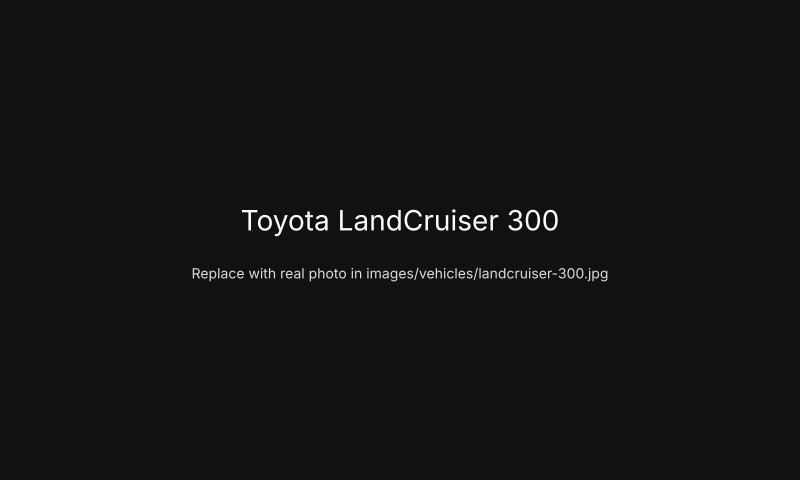

Toyota LandCruiser 300
Category: Large 4x4 • Year: 2022+

Introduction
This is demo content for the Toyota LandCruiser 300. The text below is for demonstration purposes only and may not represent verified test data. Replace with your own testing notes and observations.
Specifications
| Engine | V6 diesel / turbo (example) |
|---|---|
| Transmission | 10-speed automatic |
| Power | 310 kW (example) |
| Torque | 700 Nm (example) |
| GVM | 3,500 kg (example) |
| Towing capacity | 3,500 kg (example) |
| Payload | 800 kg (example) |
| Ground clearance | 230 mm (example) |
| Fuel consumption | 10–12 L/100km (combined, example) |
Off-road capability
General engineering analysis: the ladder-frame and modern suspension provide strong underbody protection and good articulation; electronic diff systems assist traction in varied terrain.
Interior & Technology
A spacious cabin with abundant driver aids and modern infotainment. Replace with measured notes for accuracy.
Safety
Includes driver assistance features; see manufacturer's specs for ADR and NCAP ratings.
Engineering observations
General engineering analysis: modern turbo diesel engines improve torque delivery, while the complexity of electronic aids can make field repairs harder; modular components are typically easier to service. This paragraph is general analysis and not JuneTrail testing.
Pros
- Robust chassis and suspension
- Strong torque for towing
- Modern electronics for safety
Cons
- High purchase and running cost (example)
- Complex electronic systems
Final verdict
JuneTrail General Assessment: Suitable for owners needing a heavy-duty touring platform. Replace this with your tight, tested verdict when you have JuneTrail testing data.